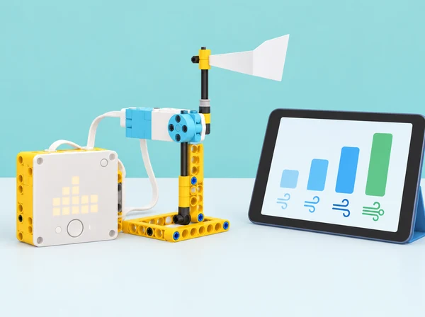
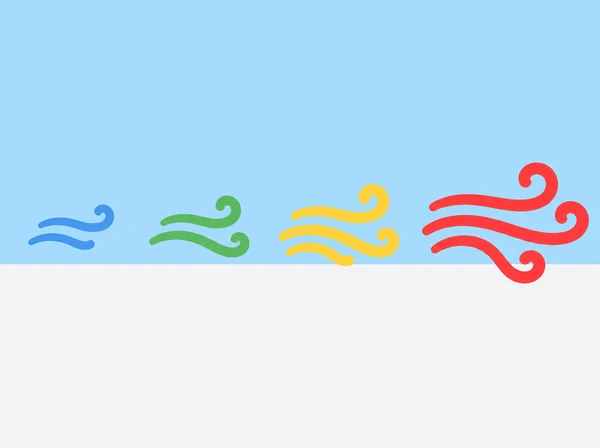
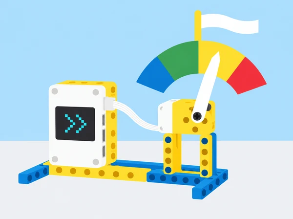

Un indicador per a llegir dades de vent
🏷️ Meteorologia i dades
🌱 Situació, repte i intenció
🎯 Aprenentatges i vocabulari
- Interpretar una dada quantitativa de velocitat del vent i identificar-ne la font i les unitats.
- Construir i calibrar un indicador amb intervals que es puguen distingir i provar.
- Afegir una segona condició o direcció i comprovar com canvia la representació.
- Comunicar que el prototip representa dades i no mesura el vent ni substitueix els avisos oficials.
- Elaborar un missatge divulgatiu breu amb font, ubicació, hora i límits de la previsió; relacionar el treball amb tasques de meteorologia, ciència de dades i enginyeria.
🧰 Materials i preparació
- Hub SPIKE Prime, un motor i peces per a una base estable i un indicador lleuger.
- Ordinador o tauleta amb l’app i els blocs meteorològics al núvol.
- Targetes, paper, regla i plantilla d’angles per a l’ampliació a 180°.
- Taula de valors datada i amb unitats per si no hi ha connexió.
- Un segon motor per al dial de direcció, opcional; la matriu LED ja permet representar-la.
Abans de la sessió, confirmeu l’accés a les dades, la ciutat consultable, la unitat disponible i el funcionament del programa. Prepareu també les targetes de classificació desconnectada.
📅 Seqüència didàctica
Construïm i interpretem un indicador (45–60 min)
Fase 1 · Activem i prediem
Parleu de com canvien les activitats quotidianes quan fa vent i de com distingim una brisa d’un vent fort. Presenteu l’escala Beaufort com una classificació de referència, no com una mesura del pati. Cada equip prediu quina posició o categoria mostrarà l’indicador davant d’una velocitat triada.
Fase 2 · Explorem i construïm
En parelles, munteu una base estable amb una agulla o placa lleugera i un motor SPIKE. Alineeu el motor perquè l’angle programat corresponga al sentit de la fletxa. Trieu una ciutat pública a l’app, llegiu la velocitat i executeu el programa inicial. Si no hi ha consulta en viu, feu servir una taula de valors datada i identifiqueu-la com una simulació arxivada.
Fase 3 · Expliquem i registrem
Descriviu què mostra l’indicador i com es relaciona la dada amb la posició. Registreu ciutat, data, hora, unitat i font; dibuixeu el mecanisme i assenyaleu quina part és entrada de dades, procés i eixida del model.
Fase 4 · Apliquem i millorem
Compareu la lectura inicial amb una segona velocitat. Si l’agulla no assenyala la categoria prevista, reviseu l’alineament o el programa i canvieu una sola cosa abans de repetir la prova.
Fase 5 · Comprovem i reflexionem
Expliqueu què representa l’agulla i què no permet concloure la maqueta.
Calibrem quatre intervals amb condicions (45–60 min)
Fase 1 · Activem i prediem
Ordeneu targetes de velocitat i associeu cada banda amb el color acordat. Manteniu les unitats visibles: calma · força 0: 0–<0,5 m/s; blau · forces 1–3: 0,5–<5,5 m/s; verd · forces 4–6: 5,5–<13,8 m/s; groc · forces 7–9: 13,8–<24,4 m/s; roig · forces 10–12: ≥24,4 m/s. Els quatre colors agrupen forces segons el resum de LEGO; no són els tretze trams complets de l’escala Beaufort. La força 12 no té límit superior. Predigueu el resultat en cada frontera.

Fase 2 · Explorem i construïm
Com a bastida, podeu començar amb dos intervals; el repte compartit és arribar als quatre i verificar-los.
- Escriviu una taula de llindars amb unitats coherents i decidiu a quin tram pertany cada valor de frontera.
- Programeu condicions si / si no perquè cada tram active el color o l’angle assignat.
- Tracteu 0 ≤ velocitat < 0,5 m/s com a calma (força 0), separada dels quatre colors.
- Proveu 0; 0,49; 0,5; 5,49; 5,5; 13,79; 13,8; 24,39; 24,4; 32,7 i 32,71 m/s. Cada valor vàlid ha de rebre una sola classificació; una dada absent, negativa o no numèrica s’ha de marcar com a invàlida, no com a calma.
- Anoteu si cada cas queda classificat com esperàveu i corregiu les condicions quan calga.
Fase 3 · Expliquem i registrem
Descriviu com les condicions transformen dades contínues en grups discrets. Deseu la taula, el pseudocodi o l’esquema de condicions i indiqueu què fa cada frontera.
Fase 4 · Apliquem i millorem
Repetiu les proves de frontera, inclòs un valor superior a 32,7 m/s, que continua dins de la força 12. Comproveu també que l’entrada invàlida queda diferenciada de la calma. Anoteu si cada cas es classifica com esperàveu i corregiu les condicions quan calga; torneu a executar els casos afectats.
Fase 5 · Comprovem i reflexionem
Una altra parella revisa si les quatre bandes cobreixen els casos previstos i si la calma i els valors fora de rang tenen una resposta definida.
Comparem ubicacions i afegim direcció (45–60 min)
Fase 1 · Activem i prediem
Abans d’executar el programa, compareu dues velocitats en cadascuna de tres ciutats públiques i predigueu quina categoria correspondrà a cada dada. Distingiu aquestes dades de les condicions meteorològiques locals del centre.
Fase 2 · Explorem i construïm
Executeu el mateix programa amb almenys dues velocitats diferents en cadascuna de les tres ciutats. Afegiu la direcció del vent amb fletxes a la matriu LED del hub. Si hi ha temps, amplieu l’indicador fins a 180° i mesureu quant tarda l’equip a recalibrar-lo; un segon motor per al dial és opcional. Per a l’ampliació, convertiu les dades a una altra unitat (per exemple, km/h), feu explícit el factor de conversió i comproveu un valor de frontera.

Fase 3 · Expliquem i registrem
Prepareu una taula que compare ubicació, hora, font, velocitat, categoria i direcció. Expliqueu què pot inferir el model a partir d’aquestes dades i què queda fora del seu abast.
Fase 4 · Apliquem i millorem
Reviseu una categoria o recalibreu l’indicador si els resultats de dues ubicacions no concorden amb les dades. Si useu un segon motor, proveu el dial de direcció; si no, manteniu la matriu LED com a opció base. Contrasteu l’explicació amb una font divulgativa fiable o una persona experta, si és possible. Com a extensió de comunicació, prepareu un missatge oral, escrit o pictogràfic de 30 segons amb la ciutat, l’hora, la velocitat prevista, la direcció, la font i una limitació del model.
Ha de presentar-se com una previsió didàctica, mai com una alerta meteorològica ni una indicació per a suspendre activitats. Si hi ha temps, investigueu una tasca concreta de meteorologia, ciència de dades o enginyeria relacionada amb mesurar o comunicar el vent, i contrasteu-la amb una font identificada.
Fase 5 · Comprovem i reflexionem
Presenteu la comparació citant font, ubicació i hora. Indiqueu que la previsió correspon a un lloc i moment determinats i que la maqueta no mesura el vent de l’aula o del pati ni substitueix avisos oficials. Apagueu i retorneu els materials al set.
🧪 Evidències i avaluació
Recolliu una carpeta de procés amb:
- Predicció inicial i dibuix del muntatge.
- Registre de dades, ubicació, hora i unitats; incloeu la conversió si és necessària.
- Taula de quatre categories i programa condicional.
- Proves dels llindars, casos de frontera i revisió d’una condició.
- Comparació de tres ciutats i representació de la direcció.
Criteris d’èxit: l’alumnat calibra l’indicador per a la unitat emprada, justifica els límits, classifica els casos de prova i revisa el programa a partir dels resultats. En l’ampliació, combina velocitat i direcció en el programa. El retorn entre parelles assenyala una prova que falta.
Autoavaluació:
- En procés: represente dues velocitats en tres ubicacions.
- Assolit: classifique les quatre bandes en tres ubicacions i comprove els llindars.
- Ampliacióafegisc la direcció; si dispose d’un segon motor, la mostre amb un dial i el recalibre fins a 180°.
♿ Participació, accessibilitat i seguretat
- Mostreu cada categoria amb color i amb una paraula, símbol, explicació oral o targeta tàctil; no depengueu només del color.
- Consulteu ciutats públiques i no introduïu ubicacions personals.
- Expliqueu que la previsió correspon a una ubicació i una hora, i no descriu necessàriament el pati.
- Davant d’una situació meteorològica adversa, seguiu els canals oficials i les indicacions del centre.
🔗 Referents i adaptació
La seqüència adapta Wind Speed, quarta lliçó de Life Hacks. Conserva el muntatge en parelles i l’alineament del motor, la consulta d’una ciutat, la representació de dades del núvol, les quatre bandes de color, la comparació d’ubicacions, l’ampliació a la direcció del vent i el recalibratge a 180°. Les bandes de color reprodueixen l’agrupació resumida de LEGO per a forces 1–12; la calma (força 0) es tracta a banda i la força 12 no té màxim.
Les fronteres es proven amb intervals sense buits ni solapaments, d’acord amb la taula de l’escala Beaufort del Met Office i la referència del National Weather Service. També adapta l’extensió oficial de comunicació i els itineraris professionals, sense convertir la previsió en una alerta real; incorpora classificació desconnectada, registre de dades i límits d’ús. La situació, el registre, la programació i les il·lustracions són propis; els materials docents complets remeten a l’app SPIKE.